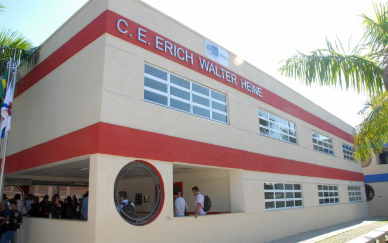

Em 2015 o C.E Erich Walter Heine levou alguns projetos da escola para participarem da FECTI-RJ (Feira estadual de ciências, tecnologias e inovação do Rio de Janeiro), e um desses projetos era o do telhado verde.
Fomos os únicos do Erich Walter Heine a chegar ao pódio neste ano, conquistando a 2º colocação na categoria interdisciplinar. E vale lembrar que essa foi a primeira vez em que o Colégio consegue alcançar essa colocação, visto que nos anos anteriores a sua maior colocação foi de 3º.
Os alunos Arthur Reis, Gabriela Reis e Rhudson Victor, que neste ano cursavam o 2º ano do ensino médio, foram os responsáveis por levar o projeto a esse novo patamar, junto aos professores Antenor José Correa e André Silva de Araújo. Porém antes de o projetor chegar à FECTI, precisou ficar entre os seis melhores colocados da SECT, que seria a semana de ciências e suas tecnologias realizada no próprio colégio. “Não imaginávamos que obteríamos alguma colocação no pódio da FECTI, pois na SECT que foi uma feira bem menor ficamos na 6º posição, ou seja, quase que não conseguimos ir para a FECTI. Porém nos esforçamos ao máximo, concertando a maioria dos defeitos anteriores, e ao fim de tudo tivemos essa grande surpresa”. Afirma os alunos.